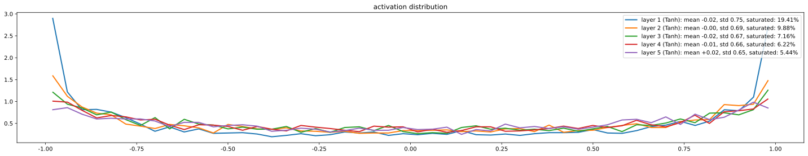
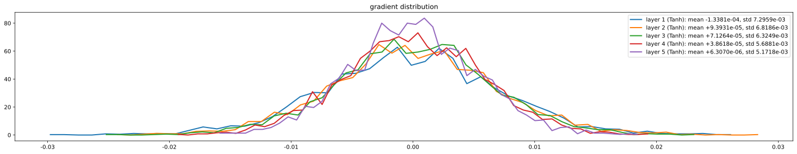
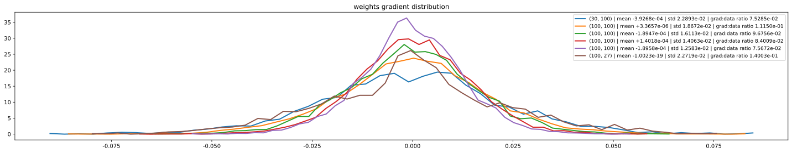
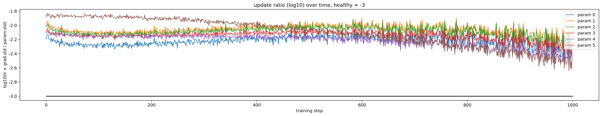

Part 2 的局限性：
| 维度 | Part 2 (MLP) | Part 3 (诊断 + 修复) |
|---|---|---|
| 网络深度 | 1 层 hidden | 可以堆 6+ 层 |
| 初始化 | 默认 randn，巧合能跑 | 系统的 Kaiming 初始化 |
| 激活值监控 | 看 loss 就行 | 看每层激活值/梯度直方图 |
| 训练稳定性 | 浅层不会爆炸 | 加 BatchNorm 才能堆深 |
| 调试思路 | "loss 不降 → 调 lr" | "看诊断图 → 定位问题层" |
从这一节开始你的段位提升：不再只会调超参，而是能看诊断图判断网络健康。
问题 1: 初始 loss 异常大 (27 而不是 3.29)
└─ 修复: W2 *= 0.01，让初始 logits 接近 0
问题 2: tanh 饱和，神经元死亡
└─ 修复: W1 缩小，让 tanh 输入落在非饱和区
问题 3: 凭直觉缩小不靠谱
└─ 修复: Kaiming 初始化，公式化解决方案
↓
但只能保证"训练初期"稳定
↓
问题 4: 训练几步后权重变化，方差又失控
└─ 修复: BatchNorm，每层强制归一化
↓
现代深度学习能堆 100+ 层的关键
↓
问题 5: 怎么知道网络是否健康？
└─ 工具: 激活值/梯度直方图、update/param ratio| 参数 | 取值 | 含义 |
|---|---|---|
block_size | 3 | 上下文窗口 |
embedding_dim | 10 | 嵌入维度 |
hidden_size | 200 | 隐藏层神经元数 |
vocab_size | 27 | 字母表大小 |
batch_size | 32 | mini-batch 大小 |
gain (tanh) | 5/3 | Kaiming 的激活修正 |
epsilon (BN) | 1e-5 | BatchNorm 防止除 0 |
momentum (BN) | 0.001 | running mean/var 的更新率 |
默认（坏）：
W1 = torch.randn((30, 200)) # 方差 1，会让 tanh 饱和
W2 = torch.randn((200, 27)) # 方差 1，初始 loss 巨大
b2 = torch.randn(27)Kaiming 初始化（好）：
W1 = torch.randn((30, 200)) * (5/3) / 30**0.5 # tanh: gain=5/3
W2 = torch.randn((200, 27)) * 0.01 # 输出层缩小让 loss≈3.29
b2 = torch.zeros(27) # bias 设 0手算合理初始 loss：
# 27 类均匀预测的交叉熵
expected_loss = -math.log(1/27) # ≈ 3.29class BatchNorm1d:
def __init__(self, dim, eps=1e-5, momentum=0.001):
self.eps = eps
self.momentum = momentum
self.training = True
# 可学参数
self.gamma = torch.ones(dim)
self.beta = torch.zeros(dim)
# buffer (推理用)
self.running_mean = torch.zeros(dim)
self.running_var = torch.ones(dim)
def __call__(self, x):
if self.training:
xmean = x.mean(0, keepdim=True)
xvar = x.var(0, keepdim=True)
else:
xmean = self.running_mean
xvar = self.running_var
xhat = (x - xmean) / torch.sqrt(xvar + self.eps)
out = self.gamma * xhat + self.beta
if self.training:
with torch.no_grad():
self.running_mean = (1 - self.momentum) * self.running_mean + self.momentum * xmean
self.running_var = (1 - self.momentum) * self.running_var + self.momentum * xvar
return out
def parameters(self):
return [self.gamma, self.beta]用法（注意 Linear 不要 bias）：
layers = [
Linear(30, 200, bias=False), BatchNorm1d(200), Tanh(),
Linear(200, 200, bias=False), BatchNorm1d(200), Tanh(),
Linear(200, 27)
]class Linear:
def __init__(self, fan_in, fan_out, bias=True):
self.weight = torch.randn((fan_in, fan_out)) / fan_in**0.5 # Kaiming
self.bias = torch.zeros(fan_out) if bias else None
def __call__(self, x):
self.out = x @ self.weight
if self.bias is not None:
self.out += self.bias
return self.out
def parameters(self):
return [self.weight] + ([] if self.bias is None else [self.bias])
class Tanh:
def __call__(self, x):
self.out = torch.tanh(x)
return self.out
def parameters(self):
return []按 Karpathy notebook 风格展示：每个诊断都是一段能直接运行的诊断代码，下方紧跟它的图形输出。图用 Kaiming 初始化的 6 层 tanh MLP（dim=30 → 100×5 → 27）生成，呈现"健康"状态。

std ≈ 0.65~0.75，饱和率 < 5%。


grad:data ratio 是 grad.std / param.std，量化每层"权重相对自己的被更新强度"。
健康的网络：所有 ratio 在同一数量级，意味着每层学习节奏一致。

log10((lr × grad).std / param.std)。每条曲线对应一个权重矩阵，黑色水平线 = -3 是健康基准。
健康的网络：所有曲线密集聚拢在 -3 附近，表示每一步每一层都按"参数本身的 0.1%"在更新。
每次实现新模型，按以下顺序做 60 秒检查：
| # | 检查 | 看什么 | 健康基准 |
|---|---|---|---|
| 1 | 初始 loss | 第一步 loss 数值 | ≈ log(N) |
| 2 | 激活值直方图 | tanh 输出分布 | 钟形，std 0.6~0.8，饱和率 < 5% |
| 3 | 梯度直方图 | 各层激活的梯度 | 量级相近，差距 < 100 倍 |
| 4 | update/param ratio | 训练前 100 步 | log10 在 -3 附近，跨层一致 |
通过 → 安心训练；不通过 → 改初始化 / 加 Norm / 调 lr。
这一节首次引入了"诊断式训练"的思维方式 —— 后面所有大模型训练都靠这个：
log(N)W = randn(fan_in, fan_out) * gain / sqrt(fan_in)(lr × grad).std() / param.std()log10(ratio) ≈ -3__init__、__call__、parameters() 三件套for layer in layers: x = layer(x) 优雅地组合加 BN 的层不要 bias
Linear(..., bias=False) 然后接 BatchNorm1d。BN 的 xmean 减法会抵消任何 bias，不去掉只是多一个无意义参数。
BN 的训练态/推理态切换
训练时必须 self.training = True，用 batch 统计；推理时必须 self.training = False，用 running 统计。忘记切换 → 推理结果飘忽不定。PyTorch 里用 model.train() / model.eval() 切换。
running_mean 的更新要在 torch.no_grad() 里
否则会被 autograd 追踪，浪费显存而且语义不对。running_mean 不是可学参数，是 buffer。
batch_size = 1 时 BN 崩坏
单样本算方差是 0（或 NaN），除以 0 → 数值崩溃。这也是 LayerNorm 取代 BN 的原因之一。
饱和率高的真凶往往是初始化，不是 lr
看到 tanh 饱和先查初始化。lr 太大只会让 loss 震荡，不会让初始就饱和。
诊断要在训练早期做，不是等 loss 不降才看
第一步 forward 后就该看一次激活值直方图。训练前 100 步是判断初始化好坏的黄金窗口。
这一节讲的是 2015 年的 BatchNorm，但你要带着"未来视角"理解：
| Part 3 内容 | 现代 LLM 用什么 | 为什么变了 |
|---|---|---|
| BatchNorm | LayerNorm / RMSNorm | LLM 推理 batch 多变；LayerNorm 不依赖 batch |
| tanh | GELU / SwiGLU | tanh 易饱和；GELU 平滑且不饱和 |
| Kaiming init | scaled init（按深度缩小） | Transformer 残差累加方差，需更小初始化 |
| 饱和率诊断 | 同样有效 | 诊断思维永不过时 |
| update/param ratio | 同样有效 | 跨架构通用 |
最重要的连续性：
你将来训练 1B 模型时，这一节学的所有东西都会以"升级版"出现：
| Part 3 学到的 | 1B 训练对应的 |
|---|---|
| 手算初始 loss = log(27) ≈ 3.29 | 手算 log(50257) ≈ 10.83（GPT-2 词表） |
| Kaiming 初始化 | scaled init: std = 0.02 / sqrt(2 × num_layers) |
| BatchNorm | RMSNorm（LLaMA 用的） |
tanh 饱和率 | GELU/SwiGLU 输出统计 |
| update/param ratio ≈ 1e-3 | 同样的基准，跨规模通用 |
| 激活值直方图 | wandb / tensorboard 自动追踪 |
Part 3 把你从"会跑模型"升级到"会诊断模型"。学完后你应该养成的习惯是：每次新模型先看每层的 mean/std/saturated%，第一步 loss 是否等于 log(N)，update/param ratio 是否在 1e-3 附近 —— 这三个体检指标，是你从此以后训练任何网络的入门动作。